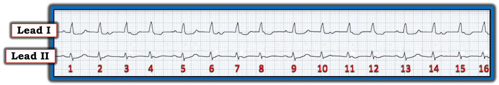
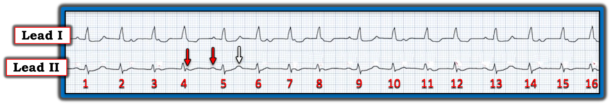
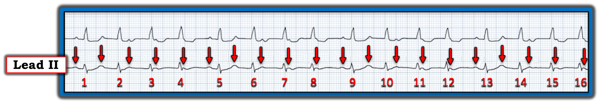
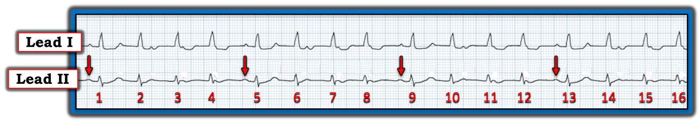
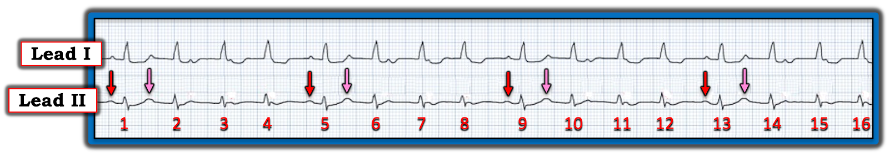
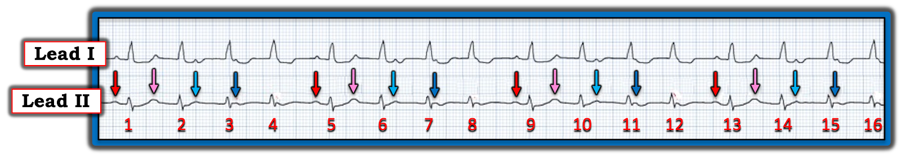
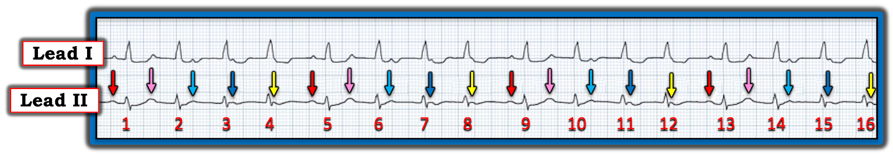
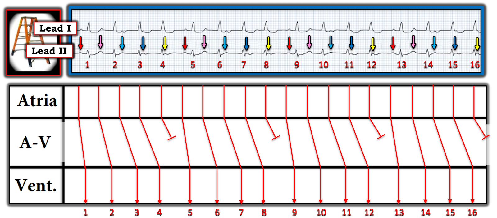
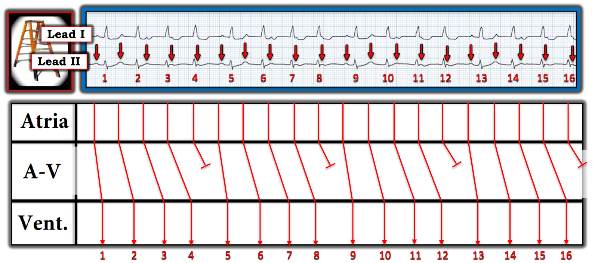

ECG Blog #420 — Blốc tim hoàn toàn "nhanh"?
Tôi được đề nghị đọc dải nhịp 2 chuyển đạo trong Hình 1 — mà không có chút bệnh sử nào. BẠN nghĩ gì?
- Có blốc AV không? Nếu có — Đó có phải là blốc AV hoàn toàn không?


======================
LƯU Ý: Nhịp hôm nay quả thật khó — nhất là nếu bạn chưa từng gặp loại nhịp này. Dù vậy, chú ý tới chuỗi các ĐIỂM THEN CHỐT (PEARL) tuần tự mà tôi trình bày trong phần bàn luận dưới đây có thể giúp rất nhiều để nhận ra nhịp này chỉ trong vài giây ở lần sau bạn gặp nó!
======================
SUY NGHĨ CỦA TÔI về nhịp hôm nay:
Giả sử bệnh nhân hôm nay không mất ổn định huyết động (và không cần sốc điện chuyển nhịp đồng bộ ngay) — Chúng ta có thể dồn toàn bộ sự chú ý vào việc đánh giá nhịp. Theo Ps, Qs & 3R Approach (mà tôi đã ôn lại trong ECG Blog #185):
- Tần số (Rate) của nhịp trong Hình 1 hơi nhanh — trung bình ~100/phút (tức là khoảng R-R gần bằng 3 ô lớn trong phần lớn bản ghi).
- Nhịp rõ ràng không đều (Regular). Khoảng R-R không như nhau suốt bản ghi.
- Có vẻ như có ít nhất một số sóng P, dù không phải phần nào của bản ghi cũng thấy sóng P.
- Mặc dù phức bộ QRS trông rộng hơn bình thường — QRS không đo được quá nửa ô lớn (tức là không quá 0.10 giây) ở cả 2 chuyển đạo theo dõi trong Hình 1.
ĐIỂM THEN CHỐT #1: Hãy nhớ câu nói “12 chuyển đạo thì tốt hơn một”. Tầm quan trọng của việc xác định QRS của một cơn nhịp nhanh là rộng hay hẹp — là ở chỗ NẾU QRS hẹp ở cả 12 chuyển đạo, thì nhịp đó là trên thất (và do đó chúng ta đã loại trừ khả năng VT = nhịp nhanh thất). Càng có nhiều chuyển đạo theo dõi — việc xác định QRS rộng hay hẹp càng chính xác.
ĐIỂM THEN CHỐT #2: Chúng ta chỉ thấy 2 trong 12 chuyển đạo của điện tâm đồ ở Hình 1. Điều này cần được hiểu rõ — vì đôi khi một phần của phức bộ QRS có thể nằm trên đường đẳng điện ở một hay nhiều chuyển đạo. Khi đó — QRS có thể “trông” hẹp ở (các) chuyển đạo bạn đang theo dõi, trong khi thực tế QRS lại rộng.
- Chính vì lý do này mà tôi luôn ủng hộ ghi điện tâm đồ 12 chuyển đạo ngay khi có thể đối với bất kỳ rối loạn nhịp nào chưa rõ nguyên nhân. Xử trí lâm sàng rõ ràng khác đi nếu bạn loại trừ được khả năng nhịp thất. Đáng tiếc là trong ca hôm nay — Không có điện tâm đồ 12 chuyển đạo.
Đánh giá thông số thứ 5:
Đến đây — Chúng ta đã xác định được những điều sau:
- Rằng tần số (Rate) của các phức bộ QRS trong nhịp hôm nay khá nhanh — nhưng không hẳn đều (Regular).
- Rằng nhịp có lẽ là trên thất (vì QRS không quá nửa ô lớn ở cả 2 chuyển đạo theo dõi mà chúng ta có)
- Rằng có ít nhất một số sóng P.
- Thông số còn lại là chữ thứ 3 R — tức là xác định XEM có sóng P nào trong nhịp hôm nay liên quan (Related) tới các phức bộ QRS lân cận hay không. Hóa ra thông số cuối cùng này là MẤU CHỐT để giải rối loạn nhịp hôm nay.
ĐIỂM THEN CHỐT #3: Cách dễ nhất để đánh giá thông số thứ 5 này — là xem có khoảng PR nào lặp lại hay không. Và cách TỐT NHẤT để tìm những khoảng PR có thể đang lặp lại — là tìm những khoảng ngưng tương đối trong nhịp — rồi kiểm tra khoảng PR đứng trước mỗi nhát kết thúc mỗi khoảng ngưng.
- LƯU Ý: “Khoảng ngưng” trong nhịp có thể ngắn — và không dài hơn các khoảng R-R khác là bao. Hình 2 minh họa nguyên tắc này — trong đó các khoảng R-R giữa nhát #4-5; 8-9; và 12-13 dài hơn một chút so với các khoảng R-R khác trong bản ghi hôm nay.
- Mũi tên ĐỎ đánh dấu các sóng P đứng trước mỗi nhát kết thúc mỗi khoảng ngưng ngắn này. Chẳng phải khoảng PR trước nhát #5, 9 và 13 bằng nhau sao?
ĐIỂM THEN CHỐT #4: Một khái niệm quan trọng trong “giải quyết bài toán rối loạn nhịp” — dựa trên câu nói “Birds of a Feather flock Together” (ngưu tầm ngưu). Ý tôi là NẾU bạn thấy một dấu hiệu điện tâm đồ nào đó nhiều lần trong một bản ghi — thì khi bạn thấy một hiện tượng tương tự nhưng không hoàn toàn rõ nét bằng — nhiều khả năng bạn đang thấy cùng dấu hiệu điện tâm đồ đó!
- Hãy xét nhát #1 trong Hình 2 — nằm ngay đầu bản ghi (nghĩa là chúng ta không biết điều gì xảy ra trước nhát #1). Vì vậy, chúng ta không thể biết nhát #1 có được đi trước bởi một khoảng ngưng nhẹ giống như các nhát #5, 9 và 13 đều được đi trước bởi một khoảng ngưng nhẹ có cùng thời gian hay không.
- NHƯNG — Với kiểu hình lặp lại là có một khoảng ngưng nhẹ sau mỗi 4 nhát (tức là “Birds of a feather …” ) — và với việc khoảng PR trước nhát #1 ( = mũi tên ĐỎ đầu tiên trong Hình 2) bằng khoảng PR trước các nhát #5,9,13 ( = các mũi tên ĐỎ còn lại trong Hình 2) — điều này không phải ngẫu nhiên, và bất kể mối liên quan nào đang diễn ra giữa hoạt động nhĩ và các phức bộ QRS lân cận ở các nhát #5-đến-16 — gần như chắc chắn cũng là cùng hiện tượng đó diễn ra ở các nhát #1-đến-5!

ĐIỂM THEN CHỐT #5: Đã đến lúc xác định XEM có một nhịp nhĩ nền đều hay không — điều có thể xảy ra NẾU một số sóng P đang ẩn trong một số sóng ST-T. Hình 3 minh họa Cách tìm các sóng P “ẩn”:
- Dò bản ghi để tìm 2 sóng P liên tiếp mà bạn thấy rõ. Các mũi tên ĐỎ trong Hình 3 minh họa 2 sóng P như vậy thấy rõ trong nhịp hôm nay.
- Dùng khoảng P-P do 2 mũi tên ĐỎ này xác lập sẽ định vị được chỗ kế tiếp để tìm một “sóng P đang ẩn”. Chẳng phải sóng T dưới mũi tên TRẮNG trong Hình 3 “mập” hơn hầu hết các sóng T khác trong bản ghi này sao?
- Lý do sóng T dưới mũi tên TRẮNG “mập” hơn — là vì đây chính là chỗ sóng P liên tiếp kế tiếp xuất hiện.
- LƯU Ý: Dùng compa đo (calipers) giúp quá trình này dễ hơn rất nhiều. Dùng compa đo ngay lập tức làm bạn “giỏi hơn” — và giúp tôi “giải” một rối loạn nhịp như bản ghi hôm nay chỉ trong vài giây, điều mà những người không dùng compa đo đơn giản là không thể giải được.


Giờ đây khi đã xác định được khoảng P-P của 3 sóng P liên tiếp (như 3 mũi tên trong Hình 3) — chỉ mất không quá vài giây để “dò bước” bằng compa vị trí của các sóng P xuất hiện đều đặn trong suốt phần còn lại của bản ghi hôm nay (Hình 4):


ĐIỂM THEN CHỐT #6: Cố gắng xác định nhịp nhĩ nền là nhịp “xoang” — hay nhịp nhĩ lạc chỗ. Việc xác định này không phải lúc nào cũng dễ.
- Nhịp xoang — được định nghĩa bằng sự hiện diện của sóng P dương ở chuyển đạo II. Đó là vì khi các điện cực chuyển đạo chi được đặt đúng — hướng khử cực nhĩ khi xung động phát ra từ nút SA đi về phía nút AV sẽ định hướng gần +60 độ trên mặt phẳng trán, tương ứng với góc nhìn điện học 60 độ của chuyển đạo chuẩn II trong tam giác Einthoven.
- Do đó — NẾU sóng P không dương ở chuyển đạo II, thì nhịp đó không phải nhịp xoang!
- Vấn đề là khi sóng P dương ở chuyển đạo chuẩn II (như trong Hình 4) — thì có thể khó phân biệt nhịp xoang với nhịp nhĩ lạc chỗ!
ĐIỂM THEN CHỐT #7: Xác định tần số nhĩ có thể giúp ích. Trong Hình 4 — tần số nhĩ là ~125/phút (có thể ước tính nhanh bằng phương pháp Cách-Một-Nhát đã ôn lại trong ECG Blog #210).
- Theo phương pháp Cách-Một-Nhát (Every-Other-Beat) — Vì khoảng P-P của cách-một-sóng-P trong Hình 4 chỉ dưới 5 ô lớn một chút — điều này có nghĩa là một nửa tần số nhĩ nhanh hơn 300 ÷ 5 một chút (tức là nhanh hơn 60/phút một chút) — nghĩa là tần số nhĩ thực sự là ~125/phút.
- ĐIỂM THEN CHỐT: Việc thấy tần số nhĩ nhanh và đều đi kèm với một nhịp trên thất (QRS hẹp) không đều — nhiều khả năng là ATach (nhịp nhanh nhĩ (Atrial Tachycardia) lạc chỗ) — hơn là nhịp nhanh xoang. Lý do của dấu hiệu này là dẫn truyền Wenckebach thường gặp với ATach lạc chỗ.
======================
Chứng Minh Giả thuyết của tôi . . .
Dùng compa đo — tôi đã chứng minh được chỉ trong vài giây rằng nghi ngờ ATach với dẫn truyền Wenckebach của tôi chính là lời giải cho nhịp hôm nay.
- Để rõ ràng, trong Hình 5 — tôi vẽ lại Hình 2, trong đó chúng ta thấy nhịp theo nhóm (group beating) (tức là các nhát #1-đến-4; #5-đến-8; #9-đến-12; #13-đến-16) — với mỗi nhóm được ngăn cách bởi một khoảng ngưng nhẹ có thời gian tương tự (tức là giữa các nhát #4-5; #8-9; #12-13) — và mỗi khoảng ngưng kết thúc bằng một sóng P được dẫn truyền (tức là các sóng P có mũi tên ĐỎ, mỗi sóng có khoảng PR giống hệt nhau trước các nhát #1,5,9,13). Kiểu hình lặp lại của những điểm tương đồng này không thể là ngẫu nhiên!
- Ngay khi compa đo của tôi xác nhận có nhịp nhĩ nền đều (mũi tên ĐỎ trong Hình 4) — tôi biết nhịp hôm nay phải là ATach với dẫn truyền Wenckebach.


Biết được (từ Hình 4) vị trí của từng sóng P nền đều đặn — giúp tôi tập trung vào sóng P thứ 2 trong mỗi nhóm — mà tôi đã đánh dấu bằng mũi tên HỒNG trong Hình 6. Mỗi sóng P có mũi tên HỒNG này đều dẫn truyền phức bộ QRS thứ 2 trong mỗi nhóm nhát (tức là các sóng P có mũi tên HỒNG dẫn truyền các nhát #2,6,10 và 14).
- Lưu ý rằng khoảng PR của mỗi sóng P có mũi tên HỒNG dài hơn khoảng PR trước nhát thứ 1 trong mỗi nhóm (được đánh dấu bằng mỗi sóng P có mũi tên ĐỎ).


Tiếp theo, trong Hình 7 — tôi tập trung vào sóng P thứ 3 và thứ 4 trong mỗi nhóm (lần lượt được đánh dấu bằng mũi tên XANH DƯƠNG nhạt và đậm).
- Lưu ý khoảng PR dài dần ra ở mỗi mũi tên màu trong mỗi nhóm của cả 4 nhóm!


Cuối cùng, trong Hình 8 — tôi đánh dấu bằng mũi tên VÀNG vị trí của sóng P đúng lúc kế tiếp.
- Chính những sóng P "đúng lúc" có mũi tên VÀNG này là sóng P bị rớt (không dẫn truyền) trong mỗi chu kỳ Wenckebach của nhịp hôm nay.
- Điều này đúng như mong đợi với dẫn truyền Wenckebach — ở chỗ các sóng P VÀNG không dẫn truyền này xuất hiện ở đầu khoảng ngưng nhẹ giữa các nhóm — sau đó sóng P đúng lúc tiếp theo (tức là sóng P có mũi tên ĐỎ kế tiếp) bắt đầu một chu kỳ mới với khoảng PR ngắn hơn.


======================
Giản đồ bậc thang . . .
Cách suy luận ở trên cho nhịp hôm nay được thể hiện dễ thấy hơn trong Hình 9 nhờ minh họa bằng giản đồ bậc thang (laddergram).
- Để rõ ràng, trong Hình 9 — tôi giữ nguyên màu các mũi tên từ Hình 8, để dễ nhận ra khoảng PR dài dần ra trong mỗi nhóm — cho đến khi sóng P thứ 5 trong mỗi nhóm ( = các sóng P có mũi tên VÀNG) không được dẫn truyền — tiếp theo, ở cuối mỗi khoảng ngưng ngắn, dẫn truyền được nối lại với khoảng PR ngắn lại ở nhát thứ 1 của nhóm kế tiếp (được đánh dấu bằng mỗi sóng P có mũi tên ĐỎ).


Hình 10 là giản đồ bậc thang hôm nay khi không tô màu.


======================
SUY NGHĨ CUỐI CÙNG về nhịp hôm nay:
Như tôi đã lưu ý ở đầu ca hôm nay — nhịp hôm nay là một nhịp khó nếu bạn chưa từng gặp thực thể này. Nhưng một khi bạn đã biết kiểu biểu hiện rối loạn nhịp này — việc nhận ra nó trở nên DỄ DÀNG chỉ trong vài giây khi nhìn bản ghi.
- Các kiểu hình lặp lại khó có thể là do ngẫu nhiên! Hãy khắc sâu khái niệm này bằng cách quay lại bản ghi gốc (đó là lý do tôi một lần nữa đưa Hình 1 dưới đây, không đánh dấu sóng P nào).
- Khi giờ đây bạn NHÌN LẠI bản ghi ban đầu này — Chẳng phải giờ đã dễ nhận ra nhịp theo nhóm với kiểu hình lặp lại của các khoảng tương tự — trong đó mỗi khoảng ngưng ngắn đều kết thúc bằng những sóng P dễ nhận ra với cùng khoảng PR trước các nhát #1,5,9 và 13 sao?
- NẾU bạn đã dùng compa đo để dễ nhận ra các mối liên quan này — Chẳng phải đã rất DỄ để xác lập chỉ trong vài giây những điểm tương đồng về khoảng đó sao?
- ĐIỀU CỐT LÕI: Một khi bạn nhận ra nhịp hôm nay là nhịp trên thất — với nhịp theo nhóm — và với các sóng P nhanh, xuất hiện đều đặn — cho thấy rõ sự dẫn truyền của sóng P thứ 1 ở cuối mỗi khoảng ngưng — về cơ bản bạn đã xác lập được rằng nhịp đó là ATach với dẫn truyền Wenckebach.
- Nhịp hôm nay không phải blốc AV hoàn toàn — vì blốc AV hoàn toàn ( = độ 3) thường đi kèm với một nhịp thoát đều — còn nhịp thất trong Hình 1 rõ ràng không đều!
- "Tin tốt" — là phần lớn các trường hợp khi ATach đi kèm với kiểu nhịp theo nhóm của Wenckebach AV độ 2 — rối loạn dẫn truyền thường hết khi ATach được kiểm soát.

==================================
Lời cảm ơn: Xin cảm ơn về ca bệnh và bản ghi này đã được gửi ẩn danh để tôi cho ý kiến.
==================================
Các bài ECG Blog liên quan đến ca hôm nay:
- ECG Blog #185 — ôn lại Ps, Qs & 3R Approach (Hãy nghe Audio Pearl #3 trong bài này).
- ECG Blog #188 — Ôn lại cách đọc và vẽ giản đồ bậc thang (kèm ĐƯỜNG DẪN tới hơn 90 ca có giản đồ bậc thang — nhiều ca có minh họa tuần tự từng bước).
- ECG Blog #267 — Ôn lại, bằng các giản đồ bậc thang từng bước, việc suy luận một ca Mobitz I có nhiều hơn một cách giải thích khả dĩ.
- ECG Blog #210 — để ôn lại phương pháp Cách-Một-Nhát (Every-Other-Beat) giúp ước tính nhanh tần số tim (Xem Video Pearl #27 trong bài này).
- ECG Blog #229 — ôn lại cách phân biệt cuồng nhĩ (AFlutter) với ATach.
- Bài ngày 12 tháng 11 năm 2019 trên Dr. Smith's ECG Blog — trong đó tôi trình bày cách tiếp cận của mình với một nhịp SVT đều.
- ECG Blog #261 và ECG Blog #370 — để xem thêm ví dụ về ATach với dẫn truyền Wenckebach.
- ECG Blog #192 — 3 nguyên nhân của phân ly nhĩ thất.
- ECG Blog #191 — Ôn lại sự khác biệt giữa phân ly nhĩ thất với blốc AV hoàn toàn.
- ECG Blog #389 — ECG Blog #373 — và ECG Blog #344 — để ôn lại một số ca minh họa "giải quyết bài toán blốc AV".